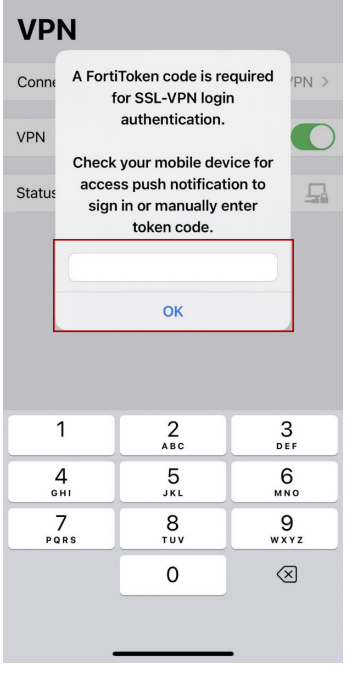

? กลับไปคู่มือ
เข้าใช้งาน VPN บนมือถือ / แท็บเล็ต
หน้าจออ้างอิง iPhone / iPad
ก่อนเริ่ม: ต้องตั้งค่า FortiClient และ FortiToken แล้ว
1. เลือก THP_VPN
เปิด FortiClient > VPN > THP_VPN > Connect

VPN ? THP_VPN ? Connect 2. กรอก Username / Password
ใช้ Username / Password เดียวกับ sso.thailandpost.com
3. ยืนยัน Token
เลือก 1 วิธี

วิธี 1: กรอก Token 6 หลัก 
วิธี 2: กด Approve ใน FortiToken 4. ตรวจ Connected
สถานะต้องเป็น Connected

Connected

มีปัญหา?
แก้ปัญหา